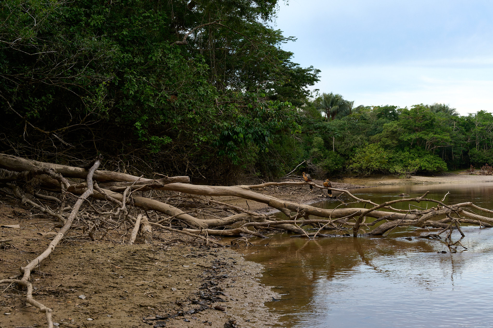
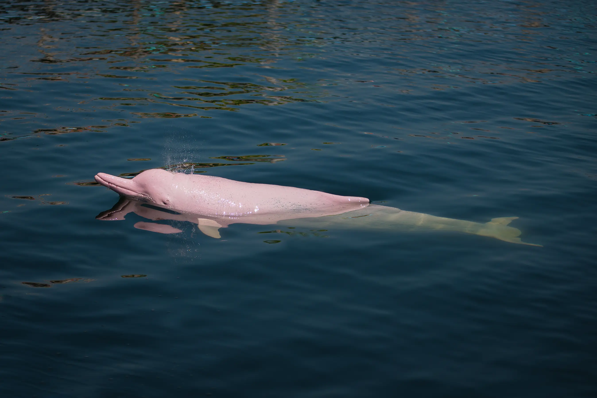
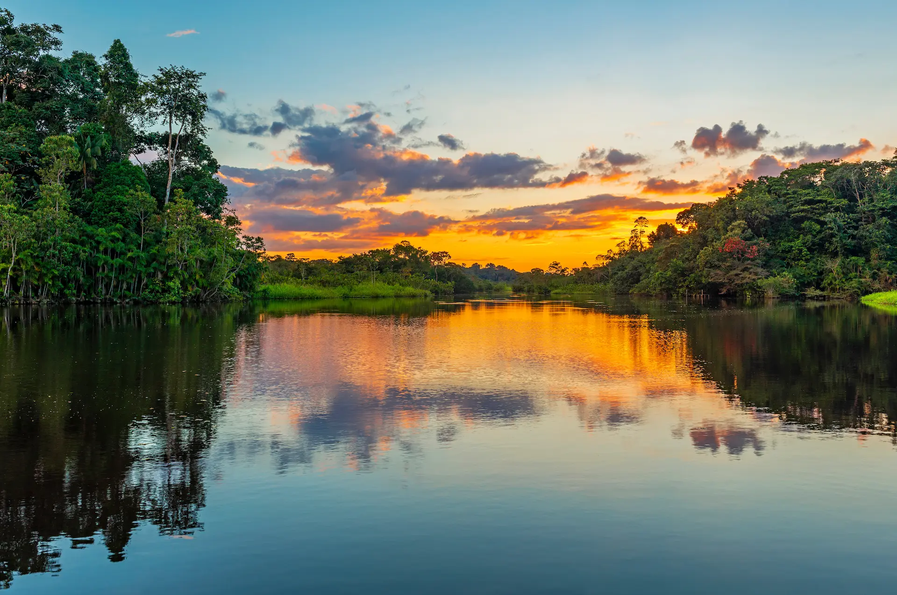
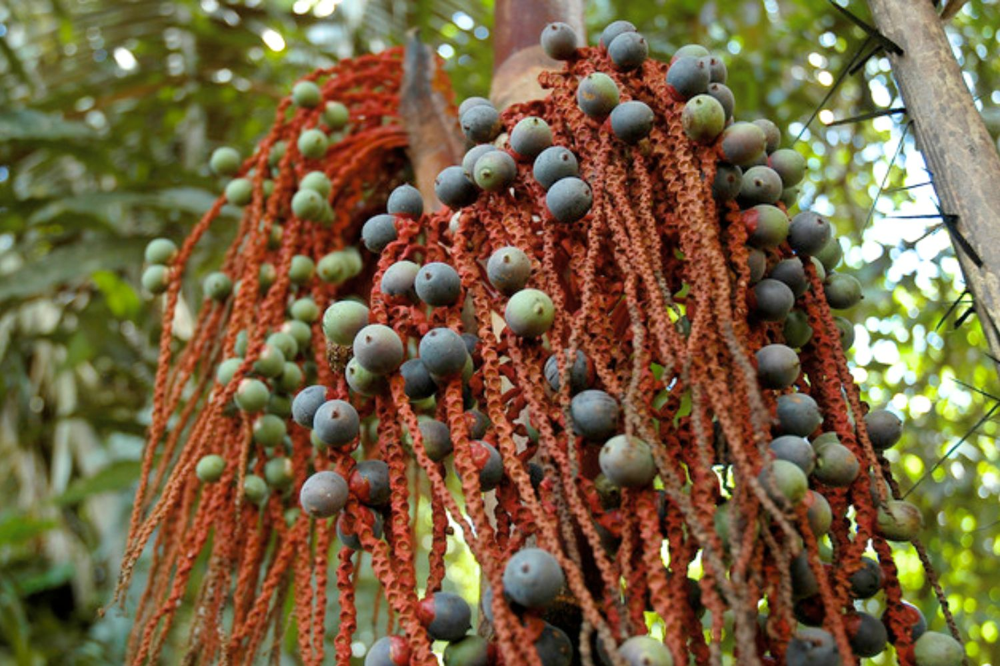
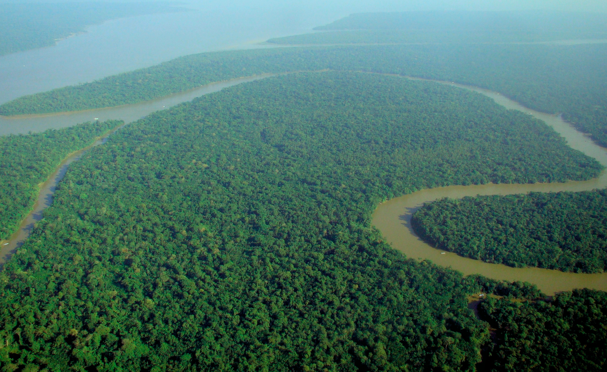
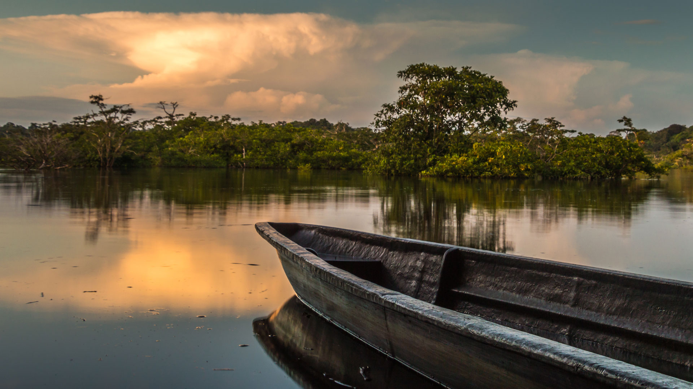

© Photography LifeThe Igapó: Forest Beneath the Water
The dry season, from June through November, is the best time to visit the Amazon Delta. Water levels drop to reveal sandy beaches along the riverbanks, wildlife concentrates around remaining water sources making animals easier to spot, and trails through the rainforest become accessible on foot. The reduced rainfall makes river travel more comfortable and boat tours far more rewarding.
The wet season, from December through May, brings its own dramatic beauty: the river rises by up to 14 metres, flooding vast areas of forest and creating the magical phenomenon known as the igapó, flooded forest where you can canoe between the treetops. If you are visiting for the Festival do Boto in Parintins, plan for late June, one of Brazil's most spectacular cultural celebrations.

© The Travel1,300 Bird Species & Counting
The Amazon Delta is home to the greatest concentration of biodiversity on the planet. With over 3,000 species of fish, more than 1,300 bird species, and countless mammals, reptiles, and insects, this is the ultimate destination for anyone who wants to experience nature in its most overwhelming and spectacular form. Pink river dolphins, giant river otters, and black caimans share the water with species found nowhere else on Earth.
The vast Marajó Island at the river's mouth is one of the best places to observe wildlife without venturing deep into the forest. Here, enormous water buffalo wade through shallow grasslands, scarlet ibis gather in the mangroves at sunset, and manatees drift silently through the channels.

© Metropolitan Touring5.5 Million km² of Living Rainforest
The Amazon River stretches over 6,400 kilometres from the Andes to the Atlantic Ocean, discharging more freshwater into the sea than any other river on Earth, roughly one fifth of all the world's river water. At its mouth near Marajó Island, the river is so wide that you cannot see the opposite bank. Standing at the shore, it feels more like an inland sea than a river.
Exploring the Amazon by riverboat is the experience of a lifetime. Multi-day cruises depart from Belém and Manaus, weaving through narrow tributaries called igarapés, where the forest closes in on either side and the sounds of the jungle surround you.

© Andean Great TreksAçaí, Tucupi & the Flavours of Belém
No visit to the Amazon Delta is complete without exploring the incredible food culture of Belém, the gateway city to the delta. The city's legendary Ver-o-Peso market is one of the largest open-air markets in Latin America, overflowing with exotic fruits like açaí, cupuaçu, and bacuri, alongside fresh river fish, herbal remedies, and handcrafted goods. Tacacá, maniçoba, and pato no tucupi are local dishes that reflect the deep indigenous roots of Amazonian cuisine.
The Amazon is home to hundreds of indigenous peoples, many of whom maintain deep connections to the forest and river. Belém itself is a vibrant city shaped by Portuguese colonial architecture, Afro-Brazilian culture, and indigenous heritage. The annual Círio de Nazaré procession, one of the largest religious events in the world, draws over two million people every October.
Activities &
Adventures
Discover the many ways to experience the Amazon Delta, from silent canoe trips through the jungle to wildlife watching on Marajó Island.
Delta Gallery

© Wikipedia / CC BY-SA
© Prehistoric Passage © The Travel
© The Travel
 © National Geographic
© National Geographic